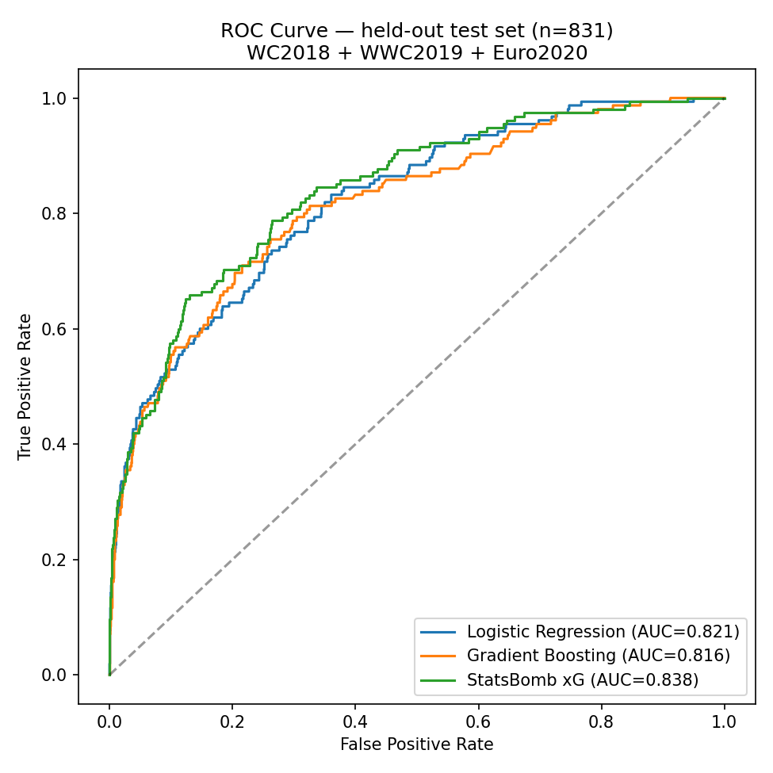
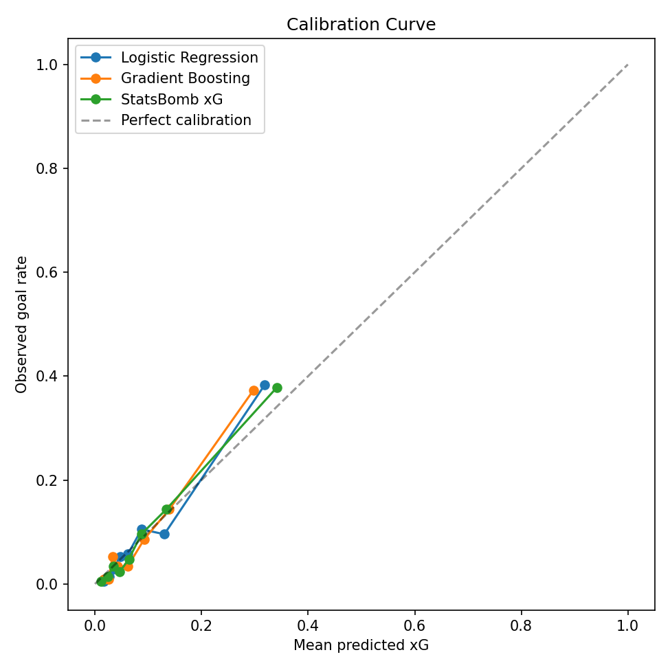
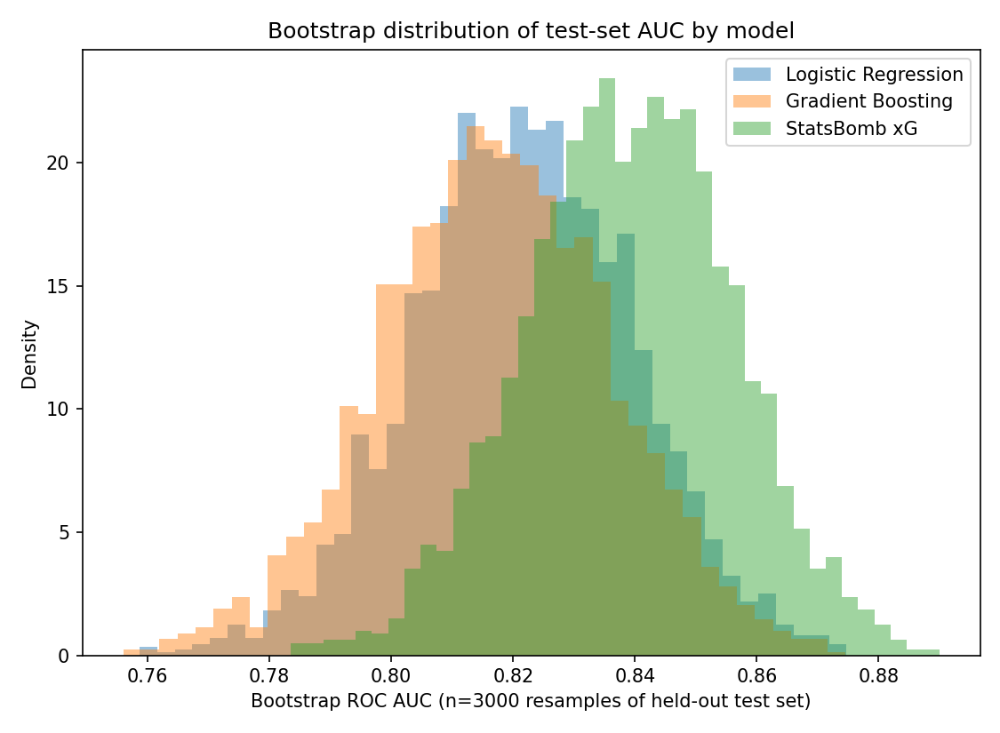
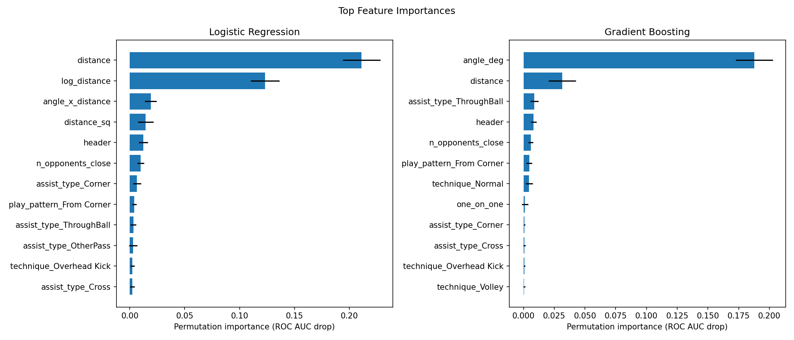
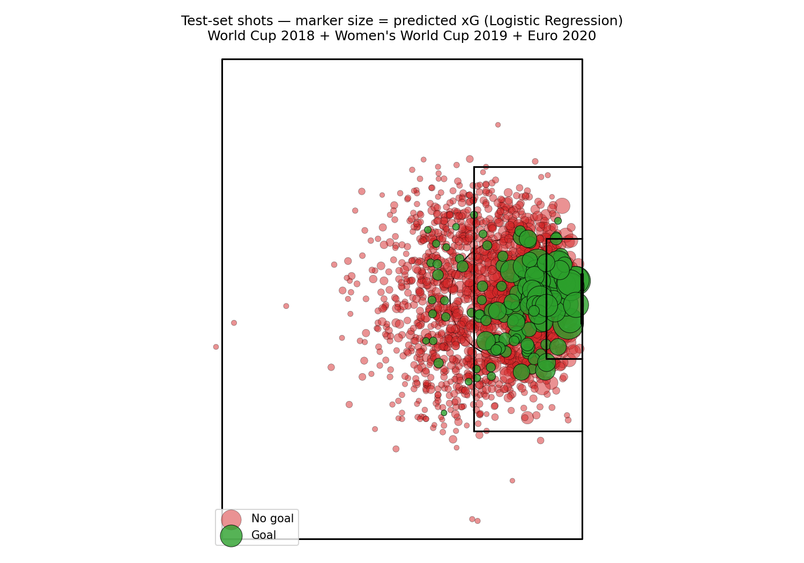
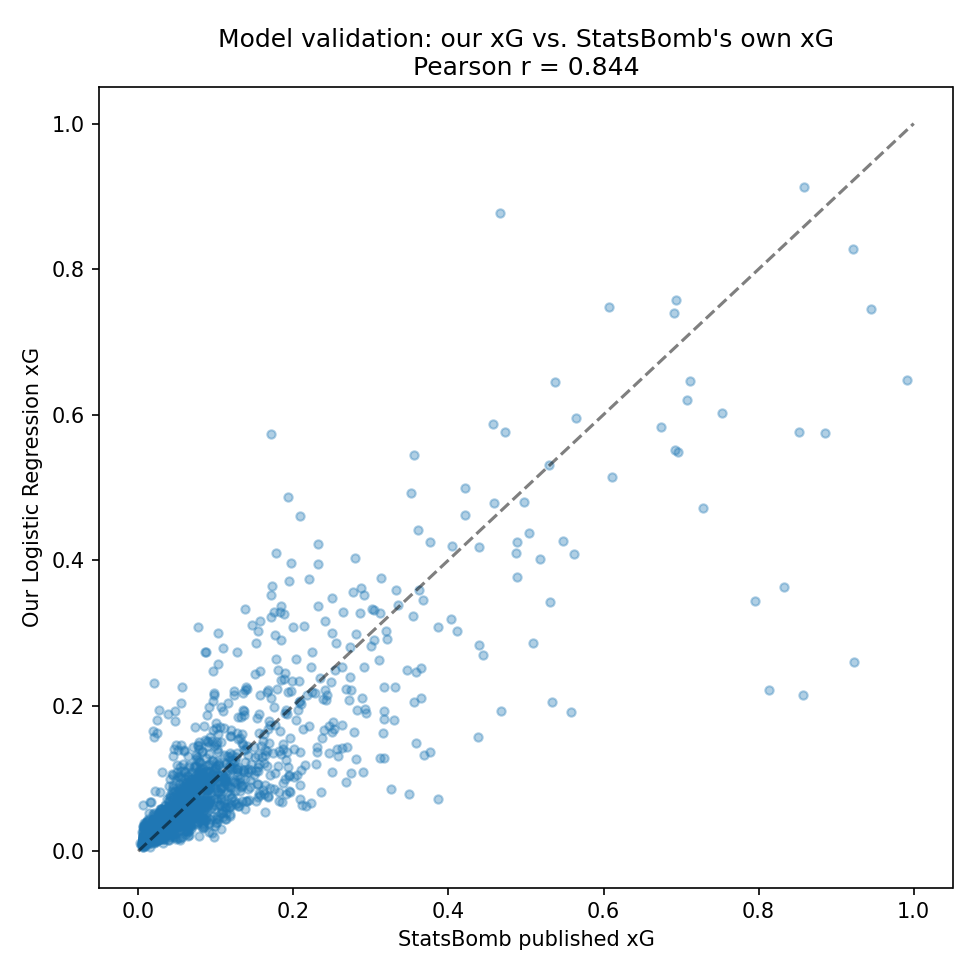
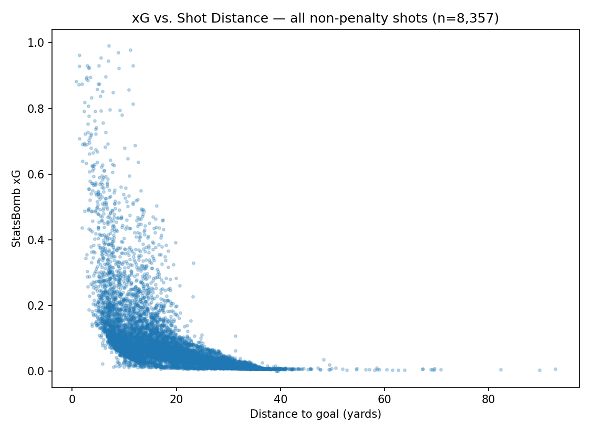
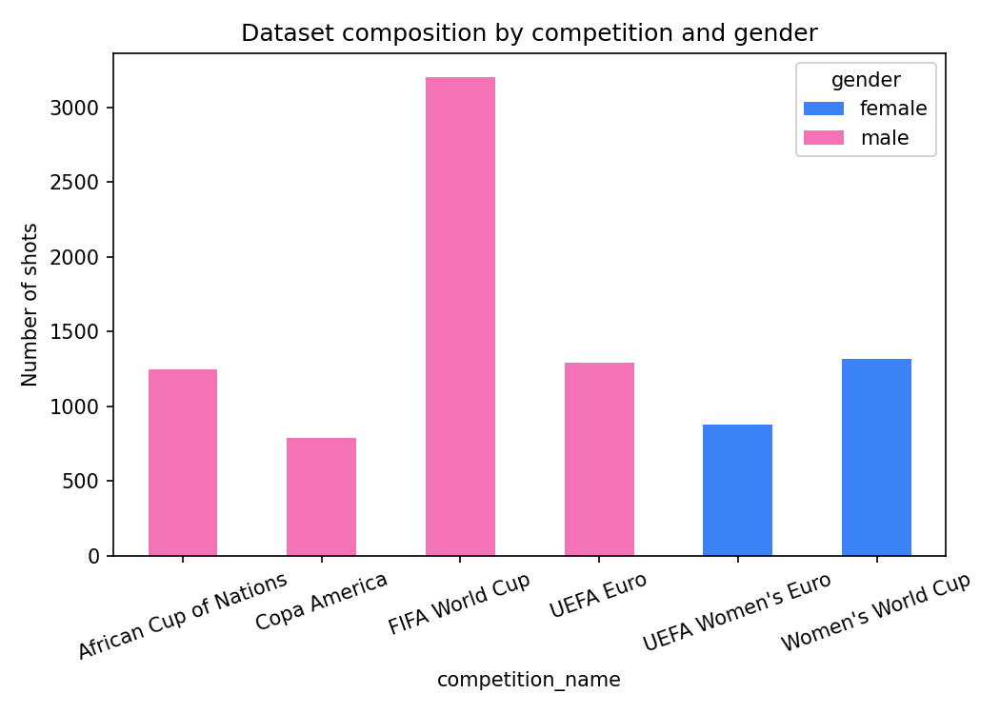

Logistic regression vs. gradient boosting trained on real StatsBomb open data across seven major tournaments - with cross-validation, hyperparameter tuning, and bootstrap significance testing.
0
Shots analyzed
0
Matches
0
Competitions
0.000
Best test AUC
New here?
No stats or ML background needed. Click any term below to expand a plain-language explanation before diving into the charts.
A single number between 0 and 1 that estimates how likely a shot was to result in a goal, based on things like distance, angle, and defensive pressure - not whether it actually went in. A tap-in from one yard might be 0.90 xG; a strike from 30 yards might be 0.03 xG. It's a way of measuring chance quality, not just counting shots or goals.
A score from 0.5 to 1.0 measuring how well the model tells dangerous shots apart from harmless ones. 0.5 is a coin flip, 1.0 is perfect. Real xG models in the industry typically land between 0.75 and 0.85 - football has a lot of irreducible randomness, so nothing gets close to 1.0, and nothing should.
A check on whether the model's percentages are honest. If it says a group of shots each have a 20% chance of scoring, roughly 1 in 5 of them should actually go in. Good calibration is what makes an xG value meaningful, rather than just a ranking of "more or less dangerous."
Instead of trusting a single test result, the model is re-tested 3,000 times on randomly resampled versions of the same held-out data. This produces a range (e.g. [0.785, 0.857]) instead of one fixed number, showing how much the result could plausibly vary - and lets you check whether one model is genuinely better than another, or if the gap could just be chance.
A way to measure how much a model relies on a given input, by scrambling that input on purpose and seeing how much accuracy drops. If scrambling "distance" hurts the model a lot, distance matters a lot; if scrambling "first-time strike" barely changes anything, it doesn't.
Instead of training and testing on one fixed split of the data, the training portion is divided into 5 chunks; the model trains on 4 of them and tests on the 5th, five times over with a different chunk held out each time. This gives a far more reliable performance estimate than trusting a single lucky (or unlucky) split.
The gap between the goals a player or team actually scored and the total xG their shots added up to. Positive means they finished chances better than the shot quality suggested (clinical finishing, or good luck); negative means the opposite (wasteful finishing, or bad luck). It's the same "goals minus xG" metric used by outlets like Opta and Understat.
Interactive
What this shows: 300 real shots sampled from the held-out test set - data the model never saw during training. Each dot sits at the shot's real pitch location; bubble size is the model's predicted xG; color is what actually happened. Hover a shot for details, or use the competition filter above to isolate one tournament.
What it tells you: green dots (goals) cluster tightly around the six-yard box and penalty spot, while red dots (misses) are scattered far wider, including from distance - exactly the pattern you'd expect if the model has correctly learned that proximity and angle to goal are what matter most.
Drill down
What this is: pick a competition, then a team, then a player to see every single shot they took in that tournament - not a sample this time, the full picture. Unlike the Shot Map above (which only uses held-out test-set shots, to fairly evaluate the model), this uses the complete dataset, since the goal here is descriptive scouting, not model evaluation.
Live, in your browser
What this is: this isn't a mockup - it's the exact trained logistic regression model (same coefficients as above) running live in JavaScript. Click a spot on the pitch to place a shot, adjust the situation, and watch the predicted xG update instantly.
Click anywhere on the pitch to move the shot.
Head-to-head
What this shows: AUC (area under the ROC curve) on the held-out test set (n=1,672), with 95% confidence intervals from 3,000 bootstrap resamples. AUC measures how well a model ranks shots by danger: 0.5 is random guessing, 1.0 is perfect separation of goals from misses. (This comparison is computed once on the full test set and isn't affected by the competition filter above.)
What it tells you: the logistic regression I tuned (AUC 0.821) is my best model, edging out the gradient boosting model (0.816) despite gradient boosting normally being the more powerful algorithm - and it lands close enough to StatsBomb's own proprietary xG (0.838), built with far more data and features, that the two overlap heavily in their confidence intervals. The paired bootstrap test confirms the logreg-vs-gboost gap isn't as clear-cut as it looks: logistic regression beats gradient boosting in 77.9% of resamples (P=0.221 that gradient boosting is actually better) - a real edge, but a modest one, and notably less decisive than in the smaller 3-competition dataset this project started from. Gradient boosting, meanwhile, is reliably below StatsBomb's xG (P=0.003 that it's better - i.e. almost certainly it isn't).
Interpretability
What this shows: permutation importance - how much the test AUC drops when a single feature's values are randomly shuffled. A bigger drop means the model relies on that feature more heavily.
What it tells you: raw distance to goal (plus its log-transformed version) now completely dominates, together accounting for the vast majority of the model's predictive power - more decisively than in the smaller dataset this project started with. Shot angle's contribution shows up mostly through the angle_x_distance interaction term rather than on its own, since angle and distance are correlated in real shot locations; the model still "knows" angle matters, it's just partly folded into the distance signal. Secondary factors like nearby defenders, headers, and assist type each nudge the prediction, but distance is what's doing the heavy lifting - the clearest, most basic footballing intuition, confirmed with actual numbers.
Full evaluation
The complete set of evaluation plots generated by the training pipeline, each with the finding it shows. Click any chart to enlarge.








Retrospective analysis
What this shows: the trained model applied retrospectively to every shot (not just the test set), comparing actual goals to total xG generated per team. 104 teams, all 7 competitions combined.
What it tells you: sort by Diff. to see it in action. With the filter set to "All," Brazil (-9.67 from 257 shots) and Germany (-8.16) sit at the bottom while France (+7.91) and the United States Women's (+7.72) sit at the top. Switch the filter to Africa Cup of Nations 2023 and Equatorial Guinea's remarkable +5.66 (from just 31 shots) jumps out - a small-sample surprise run invisible in the combined total. A positive differential means a team scored more than its chances suggested (clinical finishing, or luck); negative means the opposite. Click a column header to sort.
| Team | Shots | Goals | xG | Diff. |
|---|
Retrospective analysis
What this shows: the same retrospective analysis at player level. 324 players with at least 8 shots, all 7 competitions combined.
What it tells you: Alexandra Popp (+4.28) and Kylian Mbappé (+4.26) anchor the top overall, with Neymar's cold streak (-2.75 from 39 shots) and Marcus Berg (-2.85, zero goals from 17 shots) at the other extreme. Switch the competition filter to isolate single tournaments: Mbappé's 2022 World Cup alone was +4.24 from 32 shots and 9 goals (that final hat-trick run), while Popp's entire Women's Euro 2022 overperformance (+4.08) came from just 16 shots - remarkable efficiency in a tournament Germany reached the final of.
| Player | Team | Shots | Goals | xG | Diff. |
|---|